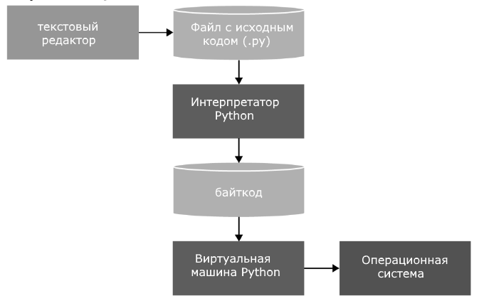
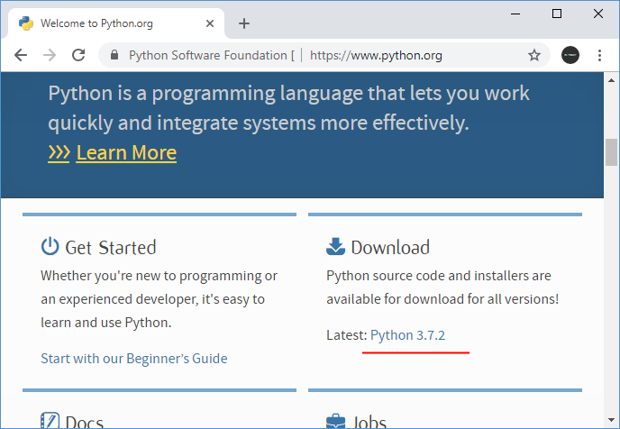
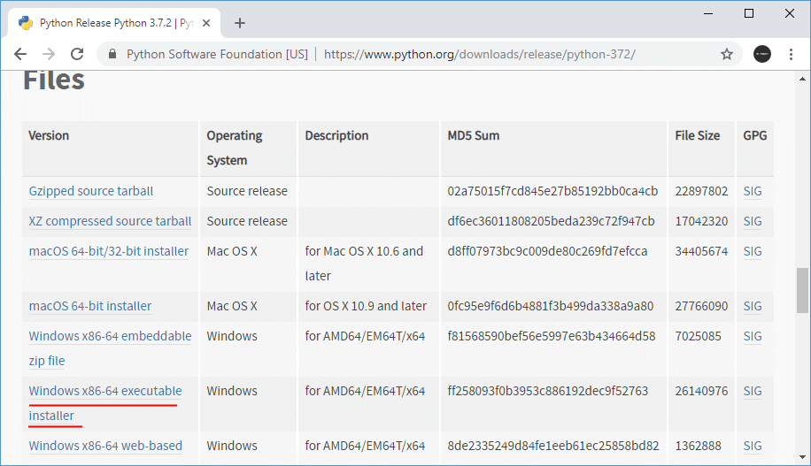
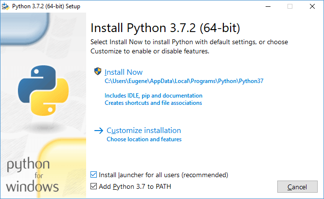
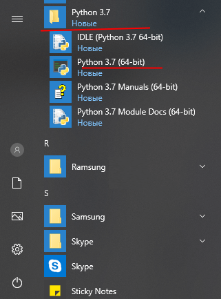

Язык программирования Python
Python представляет популярный высокоуровневый язык программирования, который предназначен для создания приложений различных типов. Это и веб-приложения, и игры, и настольные программы, и работа с базами данных. Довольно большое распространение питон получил в области машинного обучения и исследований искусственного интеллекта.
Впервые язык Python был анонсирован в 1991 году голландским разработчиком Гвидо Ван Россумом. С тех пор данный язык проделал большой путь развития. В 2000 году была издана версия 2.0, а в 2008 году - версия 3.0. Несмотря на вроде такие большие промежутки между версиями постоянно выходят подверсии. Так, текущей актуальной версией на момент написания данного материала является 3.7. Более подробную информацию о всех релизах, версиях и изменения языка, а также собственно интерпретаторы и необходимые утилиты для работы и прочую полезную информацию можно найти на официальном сайте https://www.python.org/.
Основные особенности языка программирования Python:
Скриптовый язык. Код программ определяется в виде скриптов.
Поддержка самых различных парадигм программирования, в том числе объектно-ориентированной и функциональной парадигм.
Интерпретация программ. Для работы со скриптами необходим интерпретатор, который запускает и выполняет скрипт.
Выполнение программы на Python выглядит следующим образом. Сначала мы пишим в текстовом редакторе скрипт с набором выражений на данном языке программирования. Передаем этот скрипт на выполнение интерпретатору. Интерпретатор транслирует код в промежуточный байткод, а затем виртуальная машина переводит полученный байткод в набор инструкций, которые выполняются операционной системой.
Здесь стоит отметить, что хотя формально трансляция интерпретатором исходного кода в байткод и перевод байткода виртуальной машиной в набор машинных команд представляют два разных процесса, но фактически они объединены в самом интерпретаторе.
Портативность и платформонезависимость. Не имеет значения, какая у нас операционная система - Windows, Mac OS, Linux, нам достаточно написать скрипт, который будет запускаться на всех этих ОС при наличии интерпретатора
Автоматическое управление памяти
Динамическая типизация
Python - очень простой язык программирования, он имеет лаконичный и в то же время довольно простой и понятный синтаксис. Соответственно его легко изучать, и собственно это одна из причин, по которой он является одним из самых популярных языков программирования именно для обучения. В частности, в 2014 году он был признан самым популярным языком программирования для обучения в США.
Python также популярен не только в сфере обучения, но в написании конкретных программ в том числе коммерческого характера. В немалой степени поэтому для этого языка написано множество библиотек, которые мы можем использовать.
Кроме того, у данного языка программирования очень большое коммьюнити, в интернете можно найти по данному языку множество полезных материалов, примеров, получить квалифицированную помощь специалистов.
Установка Python
Для создания программ на Python нам потребуется интерпретатор. Для его установки перейдем на сайт https://www.python.org/ и на главной станице в секции Downloads найдем ссылку на загрузку последней версии языка (на данный момент это 3.7.2):
Перейдем по ссылке к странице с описанием последней версии языка. Ближе к низу на ней можно найти список дистрибутивов для разных операционных систем. Выберем нужный нам пакет и загрузим его. Например, в моем случае это ОС Windows 64-х разрядная, поэтому я выбираю ссылку на пакет Windows x86-64 executable installer. После загрузки дистрибутива установим его.
Соответственно для MacOS можно выбрать пункт macOS 64-bit installer.
На ОС Windows при запуске инсталлятора запускает окно мастера установки:
Здесь мы можем задать путь, по которому будет устанавливаться интерпретатор. Оставим его по умолчанию, то есть C:\Users\[имя_пользователя]\AppData\Local\Programs\Python\Python36\.
Кроме того, в самом низу отметим флажок "Add Python 3.6 to PATH", чтобы добавить путь к интерпретатору в переменные среды.
После установки в меню Пуск на ОС Windows мы сможем найти иконки для доступа к разным утилитам питона:
Здесь утилита Python 3.7 (64-bit) представляет интерпретатор, в котором мы можем запустить скрипт. В файловой системе сам файл интерпретатора можно найти по пути, по которому производилась установка. На Windows по умолчанию это путь C:\Users\[имя_пользователя]\AppData\Local\Programs\Python\Python37, а сам интерпретатор представляет файл python.exe. На ОС Linux установка производится по пути /usr/local/bin/python3.7.